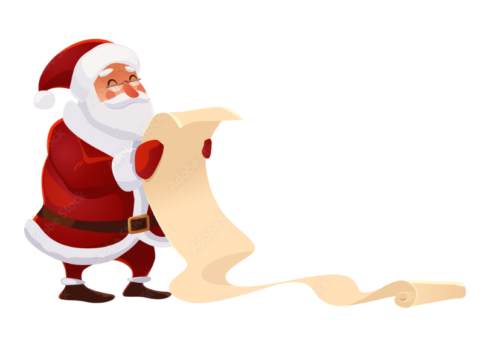

Welcome to the Naughty or Nice Quiz
Santa's Naughty or Nice List is one of the most legendary documents in the world and it's always growing and changing! The Nice List sparkles with golden letters, glowing a little brighter every time someone shares, helps, or shows kindness. The Naught List, on the other hand, is written in wiggly, smoky ink that sometimes puffs into a little "poof!" when someone makes a better choice and hops over to the Nice side. Santa checks his list twice a day to make sure he never misses when someone decides to be extra good or needs a little reminder to be better. Remember, it's never too late to switch from Naughty to Nice! Write down your good deeds and kind acts as well as the ways you plan to change some nuaght behavior, and who knows? You might just find your name shining on the Nice List this Christmas!
Are you Naughty or Nice?
